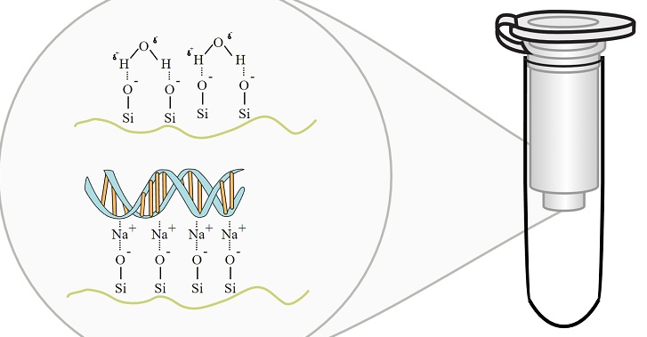

Reusing Nucleic Acid Extraction Columns

If you find yourself trying to find cheaper ways to run mini (or other size...) columns, you should know that you can reuse them without fear of contamination! Nagadenahalli Siddappa, Appukuttan Avinash, Mohanram Venkatramanan, and Udaykumar Ranga describe the process of treating the columns with HCl for reuse in this paper.
During Treatment by HCl the "regeneration reagent is fragmented to molecular weight below 36 bp. "
Liam Thompson of Bitsize Bio recommends the additional step of "passing warm water through the treated columns when regenerating to ensure that all DNA and any other contaminants are removed."